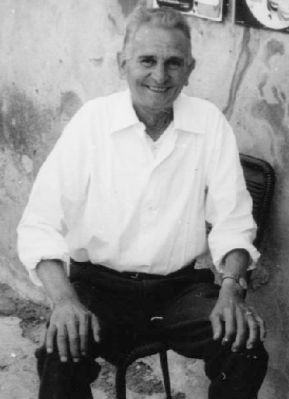
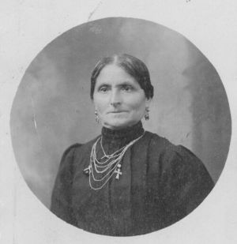
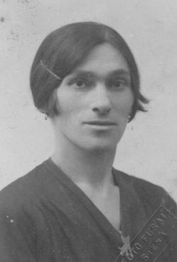

Quercegrossa (Ricordi e memorie)
CAPITOLO II - FAMIGLIE DEL '900
Indice dei Capitoli
Indice Famiglie del '900
FIASCHI VALENTINO “Scoiolo” (1964/65 - 1972); minatori; Quercegrossa;
da Tregole.

Valentino Fiaschi detto "Scoiolo" abitò con simpatica presenza a Quercegrossa nelle case del Barucci dal 1964/65 fino all'agosto 1972, data della sua morte. Rimasto solo dopo la perdita della moglie Dina, da Tregole, dove viveva dalla nascita, si trasferì a Quercegrossa per trascorrervi una semplice vita da pensionato dopo la chiusura delle miniere. Il babbo Angiolo, detto "Ricciolo", e la mamma Maria, detta "Marionzola" per essere una donnina piccina, lo avevano messo al mondo il 30 aprile 1914, dopo il loro matrimonio celebrato a Tregole il 14 febbraio 1910. Minatore il padre e minatore il figlio in una terra che offriva poche alternative. Angiolo era figlio di Valente, dei Fiaschi di S. Leonino, e al suo primo maschio, dopo le femmine Lisena ed Evelina, affibbiò subito al nascituro il nome paterno, "Valentino". Il nonno Valente, figlio di Domenico e Assunta Brogi, lo troviamo abitare pigionale a Riccieri nel 1890 con la sua piccola famiglia composta dalla moglie Violante Vannini e tre figli: Ernesta, Angiolo di 11 anni e Giulio. Nel 1897, dopo la morte del babbo e la partenza dei fratelli, Angiolo, di 18 anni, è rimasto solo con la mamma ed entro due anni si trasferirà a Tregole. Valentino, il 27 gennaio del 1951, in età di 38 anni, prese in moglie la trentenne Dina Pasqui di Gaiole in Chianti. Qualche tempo dopo Dina morirà di parto, insieme alla sua creatura, e Valentino, che aveva trascorso la vita in miniera, venne a Quercegrossa a sopravvivere con la misera ma guadagnata pensione.
FICALBI (1944-1959); mezzadri; Magione; da Basciano.
Nel 1959 la famiglia Ficalbi della Magione lascia il podere ai Florindi e si allontana per sempre da Quercegrossa. Avevano dato il cambio ai Grassi e quindi si può far risalire il loro arrivo al 1944. Numerosa e giovane famiglia, il capoccio Giuseppe aveva circa 40 anni ed era figlio della prima moglie di Virgilio, Assunta Sestini, mentre gli altri fratelli e sorelle erano di Giulia Valenti. L'unico atto registrato a Quercia è la nascita di Marcellina nel 1949. Gli altri battesimi in famiglia ci raccontano di un tormentato percorso prima della Magione: Giuseppe (1905) è nato a S. Regolo; Dante (1906) a Gaiole; Alduina (1924) a Villa a Sesta; Alberto (1927) a S. Giovanni a Cerreto; Maria (1934) a Basciano e Marcellina come detto a Quercegrossa. Un cammino intenso che gli undici Ficalbi ripresero nel 1959 per una destinazione dimenticata.
FILIPPINI (1901-1904); casieri; Petroio.
Giulio di Giuseppe Filippini e di Marianna Betti era nato nel Comune di Castelnuovo e si trovava in età di 29 anni quando entrò come casiere - fattore a Petroio nel 1901 con la moglie Ersilia Monnetti di 24 anni. Quando partirono portarono con loro il piccolo Enrico nato il 20 febbraio 1904 e battezzato a Vagliagli, mentre rimasero per sempre a Petroio, Ginetta, morta il 5 gennaio 1903 di 4 anni, e Fortunato, nato nel 1901 e vissuto pochi giorni.
FINESCHI (1909); mezzadri; Quetole.
Conosciamo la presenza dei Fineschi a Quetole attraverso la morte di Camilla Corifei, coniugata a Santi Fineschi del podere di Quetole. Morì a 60 anni ed era figlia dell’Ospedale.
FINETTI (1880 - Residenti); mezzadri; Macialla; da S. Leonino.
Nel 1767 tre famiglie Finetti abitano in diocesi di Siena, ma nessuna di esse sembra essere quella di Domenico di Giulio di Pietro che troveremo a Monteliscai a fine Settecento e dalla quale nascerà nel 1812 Luigi, figlio di Domenico, l'antenato dei Finetti di Quercegrossa. Nella ricostruzione dell’albero genealogico di questa famiglia, che sembra provenire dalle terre di Castelnuovo B.ga in diocesi di Arezzo, abbiamo capostipite Pietro Finetti che nasce intorno a 1720, coniugato con Alessandra Matteuzzi. Il di lui figlio Giulio, che morirà a Monteliscai nel
1819 "di ottanta anni", nasce tra il 1740 e il 1750 e sposa Teresa Borghi. Si conosce anche il fratello Giovanni Battista nato intorno al 1740 e morto a 84 anni a Monteliscai. Di Giulio o Giuliano, il diretto antenato, abbiamo quattro figli: Pietro (1779 - 8 gennaio 1842), celibe; Giuseppe, coniugato con Barbara Mattii, padre di cinque figli; Maria, nata nel 1790 e morta di un anno, e infine Domenico nato nel 1780 al podere Montalbano. Quest’ultimo, presa in moglie Caterina Bartalini, mette al mondo tre figli e sarà lui a trasferirsi al podere Poggino di Cellole in Pontignano tra il 1843 e il 1846. Qui vi morirà il 4 dicembre 1847, vedovo da soli quattro giorni per la morte di Caterina, ed entrambi deceduti a 67 anni. Il primogenito Natale, nato nel 1806, resterà celibe e vivrà sempre col fratello Luigi, il capoccio alla morte del babbo. Luigi, nato nel 1813, che si sposa intorno al 1840 con Maria Vanni, mette al mondo ben otto figli e, nell'elenco della famiglia del 1854, al podere Poggino i Finetti sono in sette persone: Luigi, la moglie, il fratello Natale e quattro figli: Giuseppe di 13 anni, Carolina di 11, Giulio di 9 e Giulia del 27 novembre 1848. L'ultima nata, Giuseppa, del 6 ottobre 1851, è deceduta. Mancano ancora nell'elenco il fratello Domenico, nato successivamente nel 1853, e Pietro, nato nel 1858. Sarà proprio lui, l'ultimo arrivato, il nonno dei Finetti di Macialla, mentre il fratello Giulio sarà il capoccio che guiderà la famiglia alla morte del babbo Luigi.
Passano circa venti anni e la famiglia lascia le terre di Pontignano per dirigersi al podere Cignano di S. Leonino dove sono documentati intorno al 1875. In quel popolo abita da secoli una famiglia Finetti, ma non ci sono corrispondenze di parentela. Giulio, che intanto ha sposato Assunta Giachetti, ha avuto una figlia chiamata Emilia e nel 1877, il 19 maggio, nascerà anche Giulia. Dall'elenco della famiglia, in quel 1875, manca Pietro, assente provvisoriamente, forse militare, perché riappare a Quercegrossa, la meta successiva della famiglia. Infatti, nel 1880 ripartono da Cignano ed entrano a Macialla, allora della parrocchia di Basciano.

Carolina Strulli, moglie di Pietro Finetti.
Il primo, successivo, importante avvenimento familiare nel nuovo podere fu il matrimonio di Pietro con Carolina Strulli, segnata in seguito come Chini, celebrato a Vagliagli il 22 gennaio 1881. Carolina era figlia di Ranieri Strulli e di Maria Petri abitanti in quegli anni a Vagliagli. Al matrimonio seguì il lutto per la morte dello zio Natale il 17 ottobre 1881. Poi, il 16 gennaio 1886, muore la mamma Maria Vanni e, qualche anno dopo, anche la moglie di Giulio, Assunta Giachetti morirà cinquantenne. L'anziano Luigi se ne andrà il 28 gennaio 1892, in età di 80 anni. Si inizia frattanto la generazione di Pietro con gli arrivi di Carlo l’8 febbraio 1884, Maria del 1884, Giuseppe il 24 aprile 1888, Sabatino, nato il 13 marzo 1891 ed Evelina. Da parte di Giulio, le due figlie Giulia ed Emilia si accasano con due matrimoni celebrati a Quercegrossa. La prima nel 1899 con Giuseppe Pianigiani di Tabbianello e nel 1901 la seconda con il vedovo Cesare Castagnini. La storia dei Finetti nel Novecento è quella di una famiglia di medie dimensioni per i primi decenni come nel 1911 e nel 1921 quando risultano esser dieci persone in famiglia. Con la morte di Giulio il 16 dicembre 1917, resteranno in casa Finetti soltanto i figli di Pietro. La Prima guerra si porterà via anche Sabatino nel 1918, in prigionia.

Maria Anna Bruni, moglie di Giuseppe Finetti.
Gli altri figli di Pietro si sposarono tutti in quattro matrimoni celebrati tra il 1910 e il 1920 con Carlo e Giuseppe che presero due sorelle dei Bruni di S. Fedele: Carlo si sposò in quella chiesa il 1 febbraio 1910 con Giuseppa di Domenico e Clementina Poli mentre Giuseppe prese la sorella Marianna. Delle due figlie di Pietro vediamo che Maria sposa il 21 febbraio 1914 Giuseppe Vanni di Maciallina ed Evelina va sposa a Vittorio Bruni di Castellina in Chianti il 6 novembre 1920. Se Carlo, il capoccio, avrà due femmine, Dina e Maria, sposate rispettivamente a Lorenzetti Bruno di Gaggiola il 1 dicembre 1928, e Maria data ad Armando Mugnaini di Topina il 20 ottobre 1934, a Giuseppe e Marianna nasceranno due maschi: il primo nasce il 18 ottobre 1921 e battezzato a Vagliagli col nome di Dino, e il secondo nato il 22 agosto 1927 chiamato Adelmo e battezzato a S. Dalmazio. A seguito di tutti questi avvenimenti e della morte del nonno Pietro avvenuta l'8 novembre 1930, troviamo la famiglia notevolmente ridotta che intorno al 1936 si compone di sei persone: quattro adulti e due ragazzi. Da questo momento saranno poche le registrazioni anagrafiche e dovranno passare gli anni della Seconda guerra prima di trovare quella del matrimonio di Dino con Nella Lorenzetti di Maciallina, celebrato a Quercegrossa il 22 settembre 1945, e la nascita di Marcella nel 1949. Adelmo prese in moglie Leda Sanleolini di Maciallina il 22 ottobre 1964, dopo sedici anni di fidanzamento. Lui aveva 37 anni, lei 33, e fecero il viaggio di nozze a Roma con la "Fiat 500". Tornarono nella nuova palazzina a due piani, da loro costruita lungo la strada statale a pochi metri dalla fattoria, dove tutti i Finetti si erano trasferiti fin dal 1962 e qui, nel 1967, nacque il loro unico figlio Fabio. Fra questi eventi si alternarono i decessi degli anziani Carlo il 15 maggio 1957 a 73 anni, della moglie Giuseppa, del fratello Giuseppe il 13 giugno 1971 di 83 anni e di Marianna molti anni dopo. Intanto, nel 1963, i Finetti avevano cessato di fare i contadini e si erano trasformati in operaio agricolo Dino, e camionista Adelmo. La storia si chiude col matrimonio di Marcella con Giorgio Rinaldi e la morte di Dino e Nella.
Inizio pagina
Indice famiglie del '900
Indice dei Capitoli
|